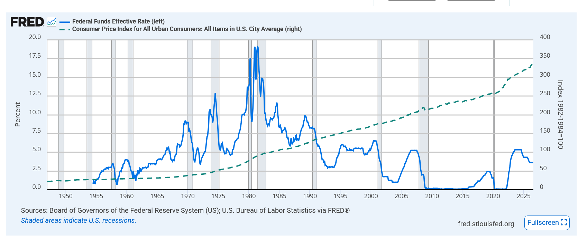

Visualization Critique and Redesign
A critique of a dual-axis line chart from FRED that plots the Federal Funds Rate against the Consumer Price Index, and a redesigned version built with D3 that puts both series on an honest, comparable footing.
Original Visualization
The original is a FRED graph that overlays two series on one time axis using two separate y-axes: the Federal Funds Effective Rate on the left (percent) and the Consumer Price Index for All Urban Consumers on the right (index, 1982-84 = 100).

Data and source
- Source tool: FRED (fred.stlouisfed.org)
- Series: FEDFUNDS (Federal Funds Effective Rate, percent) and CPIAUCSL (Consumer Price Index for All Urban Consumers, index 1982-84 = 100), monthly.
-
Dataset used here:
data/fred_fedfunds_cpi.csv(columnsobservation_date, FEDFUNDS, CPIAUCSL, USREC).
Redesign
Both series are shown as annual percentages on one shared axis: the Federal Funds Rate and consumer price inflation measured as the year-over-year change in the CPI. Shaded bands mark NBER recessions. Hover for the exact values in any month.
Critique and Redesign Report
Original visualization and context
The original is a FRED graph that overlays two monthly economic series on a shared time axis using two independent y-axes: the Federal Funds Effective Rate (left, percent) and the Consumer Price Index (right, index 1982-84 = 100). Its implied message is that monetary policy and prices move together over time. The audience is an economically literate general reader: students, journalists, and analysts browsing FRED. The tasks it supports are reading each series' trend, comparing their timing, and locating notable episodes such as the early-1980s rate peak.
Critique
Strengths. First, the chart uses authoritative, well-sourced data and a shared, clearly labelled time axis, so the horizontal position channel is used correctly and both series cover the same span. Second, recession shading and a clean, uncluttered layout give useful context and keep the data-ink ratio high.
Weaknesses. First, the two independent y-axes manufacture a false relationship. The apparent crossings and gaps between the two lines are artifacts of where FRED set each axis's range, not facts about the data; sliding either axis changes the story. Because dual axes have no principled alignment, any perceived correlation is unreliable. Second, the series use incompatible units on channels that invite direct comparison: a percent (0-20) and an index (0-400) share the vertical space, so length and position, the channels a reader instinctively compares, encode unrelated quantities. Third, the CPI is shown as a level, which only ever rises. The quantity that actually relates to the policy rate is the inflation rate, not the price level, so the chart hides the very relationship it seems to assert; the reader must also hunt for small "(left)/(right)" tags to know which axis each line uses, adding cognitive load.
Redesign rationale
The redesign is a single line chart that places both series on one shared percent axis. Three decisions drive it. First, I convert the CPI into year-over-year inflation (the twelve-month percent change). This turns an ever-rising level into a rate, addressing the third weakness and exposing the inflation-policy relationship. Second, because both series are now measured in percent per year, I plot them on one honest, zero-based axis. This removes the dual-axis trick (first weakness) and puts the two comparable quantities on the same length and position scale (second weakness), so crossings and gaps are now real. Third, I remove encoding ambiguity by labelling each line directly at its right end and adding a shared hover readout: a vertical guide, a dot per series, and a tooltip with the exact monthly values; a dashed zero line clarifies that inflation can fall below zero while the rate cannot.
Original vs. redesign
After the redesign, comparison tasks that were unreliable become sound. A reader can see that the Federal Reserve tends to raise the funds rate when inflation is high and cut it when inflation falls, visible in the tandem 1970s climbs, the early-1980s peak, the near-zero period after 2008, and the 2022 tightening. Because both lines share one axis, the vertical gap between them is now meaningful (roughly the real interest rate), which the original could not show at all. Direct labels and the tooltip let a viewer read precise values without decoding two axes. The redesign also keeps the NBER recession shading from the original, and on the shared axis it reveals a pattern the dual-axis version could not: recessions tend to follow episodes where the funds rate is pushed above inflation, as in 1980-82, 1990, and 2007-08.
Trade-offs remain. Year-over-year inflation introduces a twelve-month lag and is noisier than the smooth index, so the first year of data is dropped and short-term swings are more visible. Collapsing to one axis also sacrifices the exact price-level reading the original provided, which some readers may want. These are reasonable costs for a chart that compares the two series honestly.
References
- Federal Reserve Bank of St. Louis, FRED, Federal Funds Effective Rate [FEDFUNDS], https://fred.stlouisfed.org/series/FEDFUNDS
- Federal Reserve Bank of St. Louis, FRED, Consumer Price Index for All Urban Consumers: All Items in U.S. City Average [CPIAUCSL], https://fred.stlouisfed.org/series/CPIAUCSL
- Federal Reserve Bank of St. Louis, FRED, NBER-based Recession Indicators [USREC], https://fred.stlouisfed.org/series/USREC